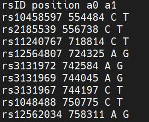
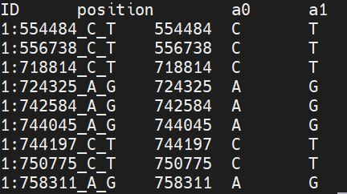

HAPS-LEGEND-SAMPLE¶
We used files from hapmap3_r2_b36. to demonstrate the conversion to other formats.
There is a separate file for each chromosome, and we have to modify the X.legend file before further processing.
X.Haps and X.legend file should be compressed in gz format before further processing.
LEGEND file before
{kind=link}
LEGEND file after
{kind=link}
HAPS-LEGEND-SAMPLE to PED-MAP¶
# Step 1. Convert HAPS-LEGEND-SAMPLE to VCF.
# It will generate one file "output_file.vcf"
# Step 2.
./plink --vcf output_file --recode --out output_file2
HAPS-LEGEND-SAMPLE to RAW¶
# Step 1. Convert HAPS-LEGEND-SAMPLE to VCF.
# It will generate one file "output_file.vcf"
# Step 2.
./plink --vcf output_file --recodeA --out output_file2
HAPS-LEGEND-SAMPLE to BED-BIM-FAM¶
# Step 1. Convert HAPS-LEGEND-SAMPLE to VCF.
# It will generate one file "output_file.vcf"
# Step 2.
./plink --vcf output_file --make-bed --out output_file2
HAPS-LEGEND-SAMPLE to GEN-SAMPLE¶
# Step 1. Convert HAPS-LEGEND-SAMPLE to VCF.
# It will generate one file "output_file.vcf"
# Step 2.
./plink --vcf output_file --export oxford --out output_file2
HAPS-LEGEND-SAMPLE to 23andme¶
# Step 1. Convert HAPS-LEGEND-SAMPLE to VCF.
# It will generate one file "output_file.vcf"
if not os.path.isdir("23andme"):
os.mkdir("23andme")
VCFtoBED_BIM_FAM("output_file.vcf")
os.system("bcftools query -l output_file.vcf > ./23andme/temp_samples.txt")
f = open("./23andme/temp_samples.txt", "r")
for x in f:
temp = open("./23andme/temp.txt", "w")
print("X")
temp.write(x.strip('\n')+" "+x.strip('\n'))
temp.write('\n')
temp.close()
os.system("./plink --bfile output_file --keep ./23andme/temp.txt --recode 23 --snps-only --out ./23andme/"+x.strip('\n')+".23andme")
HAPS-LEGEND-SAMPLE to AncestryDNA¶
# Step 1. HAPS-LEGEND-SAMPLE to 23andme
# Step 2. 23andme to AncestryDNA
See (23andme to AncestryDNA)
HAPS-LEGEND-SAMPLE to VCF¶
data = pd.read_csv("hapmap3_r2_b36_chr1.legend",index_col=False, sep="\s+")
#Create a new ID column for legend file
data["ID"] = "1:"+data['position'].astype(str)+"_"+data["a0"]+"_"+data["a1"]
data =data[['ID','position','a0','a1']]
data.to_csv("hapmap3_r2_b36_chr1.legend",index=False, sep="\t")
#Zip the legend file
os.system("gzip hapmap3_r2_b36_chr1.legend")
#Rename hapmap3_r2_b36_chr1.haps to hapmap3_r2_b36_chr1.hap
os.rename("hapmap3_r2_b36_chr1.haps.gz","hapmap3_r2_b36_chr1.hap.gz")
#Rename hapmap3_r2_b36_all.sample to hapmap3_r2_b36_chr1.samples
os.rename("hapmap3_r2_b36_all.sample","hapmap3_r2_b36_chr1.samples")
os.system("bcftools convert --haplegendsample2vcf hapmap3_r2_b36_chr1 -o output_file.vcf")